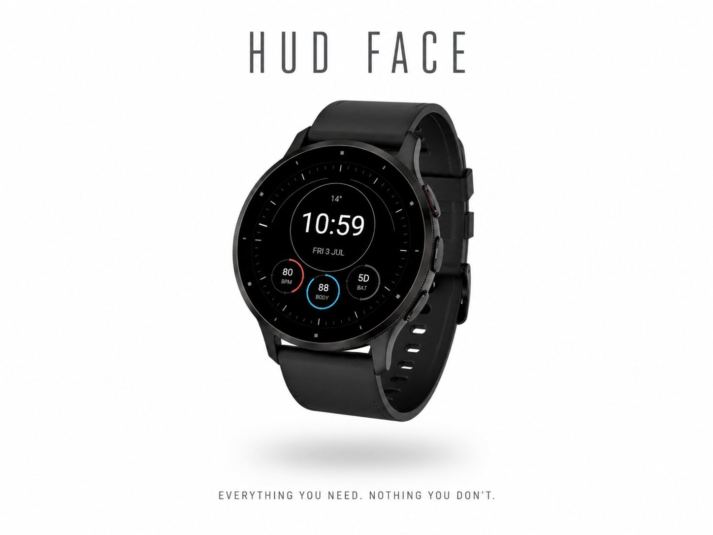
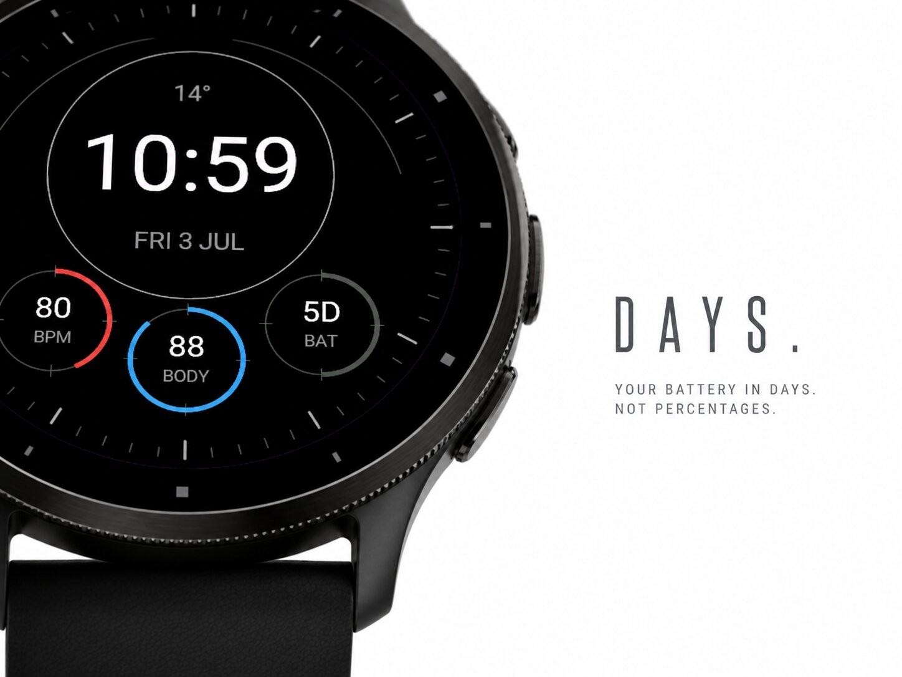
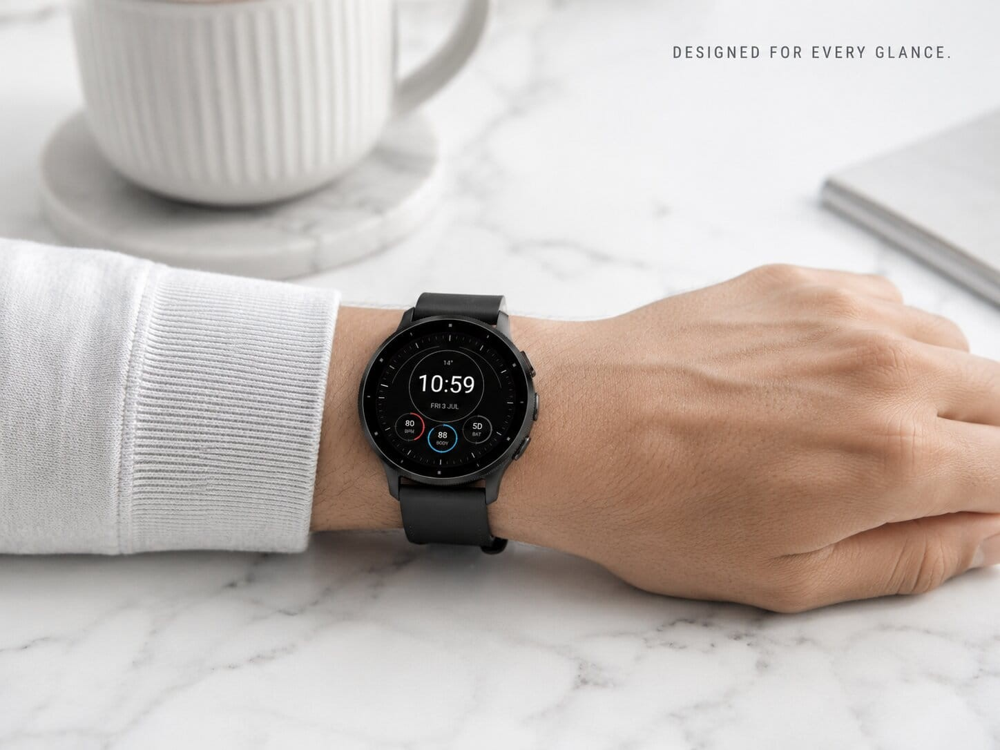
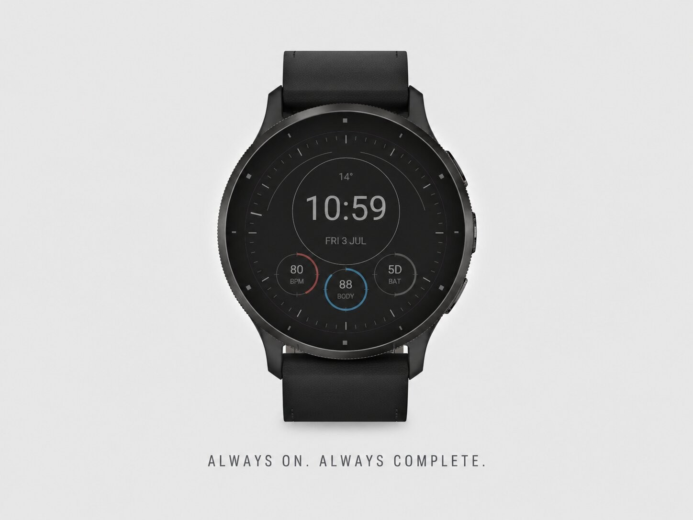

Watch faces · Watch face
Cockpit HUD with everything in one glance.




Everything you need. Nothing you don't.
A triptych is a work of art in three panels. This face gives you exactly that: three clean dials below a big, crisp time display - on a pure black background that looks stunning on AMOLED and saves battery.
Pick what each dial shows, straight from the Garmin Connect app on your phone:
In always-on mode you keep the FULL watch face. Every dial stays visible, dimmed to half brightness, with built-in burn-in protection for your AMOLED screen.
Questions or ideas? Leave a review or contact the developer.